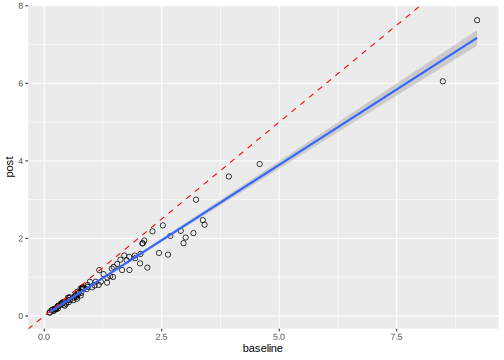
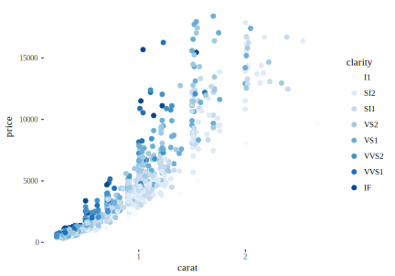
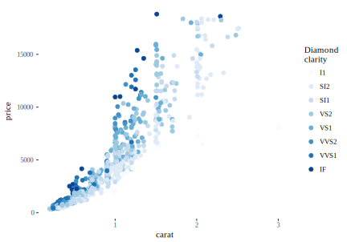
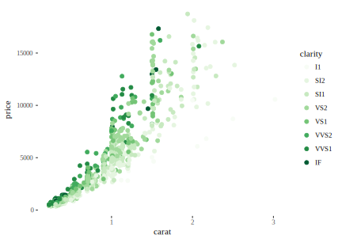
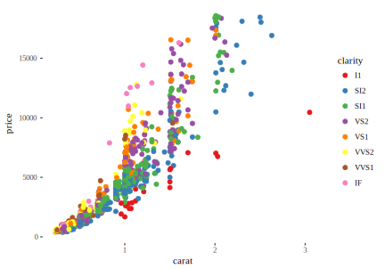
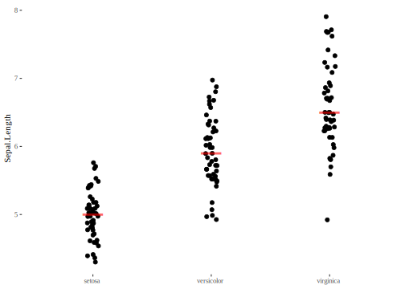

11 Värviskaalad
ColorBreweri skaala “Set1” on hästi nähtav värvipimedatele. colour_brewer skaalad loodi diskreetsetele muutujatele, aga nad näevad sageli head välja ka pidevate muutujate korral.
ggplot(mpg, aes(displ, hwy)) +
geom_point(aes(color = drv)) +
scale_colour_brewer(palette = "Set1")
11.1 Värviskaalad pidevatele muutujatele
Pidevatele muutujatele töötab scale_colour_gradient() or scale_fill_gradient(). scale_colour_gradient2() võimaldab eristada näiteks positiivseid ja negatiivseid väärtusi erinevate värviskaaladega.
df <- data.frame(x = 1, y = 1:5, z = c(1, 3, 2, NA, 5))
p <- ggplot(df, aes(x, y)) + geom_tile(aes(fill = z), size = 5)
p
# Make missing colours invisible
p + scale_fill_gradient(na.value = NA)
# Customise on a black and white scale
p + scale_fill_gradient(low = "black" , high = "white" , na.value = "red" )
#gradient between n colours
p+scale_color_gradientn(colours = rainbow(5))# Use distiller variant with continous data
ggplot(faithfuld) +
geom_tile(aes(waiting, eruptions, fill = density)) +
scale_fill_distiller(palette = "Spectral")
11.2 Värviskaalad faktormuutujatele
Tavaline värviskaala on scale_colour_hue() ja scale_fill_hue(), mis valivad värve HCL värvirattast. Töötavad hästi kuni u 8 värvini.
ToothGrowth <- ToothGrowth
ToothGrowth$dose <- as.factor(ToothGrowth$dose)
mtcars <- mtcars
mtcars$cyl <- as.factor(mtcars$cyl)
#bp for discrete color scales
bp<-ggplot(ToothGrowth, aes(x=dose, y=len, fill=dose)) +
geom_boxplot()
bp
#sp for continuous scales
sp<-ggplot(mtcars, aes(x=wt, y=mpg, color=cyl)) + geom_point()
sp
#You can control the default chroma and luminance, and the range
#of hues, with the h, c and l arguments
bp + scale_fill_hue(l=40, c=35, h = c(180, 300)) #boxplot
sp + scale_color_hue(l=40, c=35) #scatterplotHalli varjunditega töötab scale_fill_grey().
bp + scale_fill_grey(start = 0.5, end = 1)Järgmine võimalus on käsitsi värve sättida
#bp for discrete color scales
bp<-ggplot(ToothGrowth, aes(x=dose, y=len, fill=dose)) +
geom_boxplot()
bp
#sp for continuous scales
sp<-ggplot(mtcars, aes(x=wt, y=mpg, color=cyl)) + geom_point()
sp
bp + scale_fill_manual(values=c("#999999", "#E69F00", "#56B4E9"))
sp + scale_color_manual(values=c("#999999", "#E69F00", "#56B4E9"))Colour_brewer-i skaalad on loodud faktormuutujaid silmas pidades.
dsamp <- diamonds[sample(nrow(diamonds), 1000), ]
d <- ggplot(dsamp, aes(carat, price)) +
geom_point(aes(colour = clarity))
d + scale_colour_brewer()
# Change scale label
d + scale_colour_brewer("Diamond\nclarity")
# Select brewer palette to use, see ?scales::brewer_pal for more details
d + scale_colour_brewer(palette = "Greens")
d + scale_colour_brewer(palette = "Set1")
# scale_fill_brewer works just the same as
# scale_colour_brewer but for fill colours
p <- ggplot(diamonds, aes(x = price, fill = cut)) +
geom_histogram(position = "dodge", binwidth = 1000)
p + scale_fill_brewer()
# the order of colour can be reversed
# the brewer scales look better on a darker background
p + scale_fill_brewer(direction = -1) + theme_dark()

Väga lahedad värviskaalad, mis eriti hästi sobivad diskreetsetele muutujatele, on wesanderson paketis. Enamus skaalasid on küll ainult 3-5 värviga. Sealt saab siiski ekstrapoleerida rohkematele värvidele (?wes_palette; ?wes_palettes).
#install.packages("wesanderson")
#library(wesanderson)
#bp for discrete color scales
bp<-ggplot(ToothGrowth, aes(x=dose, y=len, fill=dose)) +
geom_boxplot()
bp
#wes_palette(name, n, type = c("discrete", "continuous"))
#n - the nr of colors desired, type - do you want a continious scalle?
bp+scale_fill_manual(values=wes_palette(n=3, name="GrandBudapest"))
wes_palette("Royal1")
wes_palette("GrandBudapest")
wes_palette("Cavalcanti")
wes_palette("BottleRocket")
wes_palette("Darjeeling")
wes_palettes #gives the complete list of palettesArgument breaks kontrollib legendi. Sama kehtib ka teiste scale_xx() funktsioonide kohta.
bp <- ToothGrowth %>%
ggplot(aes(x = dose, y = len, fill = dose)) +
geom_boxplot()
bp
# Box plot
bp + scale_fill_manual(breaks = c("2", "1", "0.5"),
values = c("red", "blue", "green"))
# color palettes
bp + scale_fill_brewer(palette = "Dark2")
#sp + scale_color_brewer(palette="Dark2")
# use graysacle
#Change the gray value at the low and the high ends of the palette :
bp + scale_fill_grey(start = 0.8, end = 0.2) + theme_classic()The ColorBrewer scales are documented online at http://colorbrewer2.org/ and made available in R via the RColorBrewer package. When you have a predefined mapping between values and colours, use scale_colour_manual().
scale_colour_manual(values = c(factor_level_1 = "red", factor_level_2 = "blue")
scale_colour_viridis() provided by the viridis package is a continuous analog of the categorical ColorBrewer scales.
11.3 A complex ggplot
Let’s pretend that we are measuring the same quantity by immunoassay at baseline and after 1 year of storage at -80 degrees. We’ll add some heteroscedastic error and create some apparent degradation of about 20%:
set.seed(10)
baseline <- rlnorm(100, 0, 1)
post <- 0.8 * baseline + rnorm(100, 0, 0.10 * baseline)
my_data <- tibble(baseline, post)
my_data %>%
ggplot(aes(baseline, post)) +
geom_point(shape = 1) + # Use hollow circles
geom_smooth(method = "lm") + # Add linear regression line
geom_abline(slope = 1, intercept = 0, linetype = 2, colour = "red")
Now we will prepare the difference data:
diff <- (post - baseline)
diffp <- (post - baseline) / baseline * 100
sd.diff <- sd(diff)
sd.diffp <- sd(diffp)
my.data <- data.frame(baseline, post, diff, diffp)In standard Bland Altman plots, one plots the difference between methods against the average of the methods, but in this case, the x-axis should be the baseline result, because that is the closest thing we have to the truth.
library(ggExtra)
diffplot <- ggplot(my.data, aes(baseline, diff)) +
geom_point(size=2, colour = rgb(0,0,0, alpha = 0.5)) +
theme_bw() +
#when the +/- 2SD lines will fall outside the default plot limits
#they need to be pre-stated explicitly to make the histogram line up properly.
ylim(mean(my.data$diff) - 3*sd.diff, mean(my.data$diff) + 3*sd.diff) +
geom_hline(yintercept = 0, linetype = 3) +
geom_hline(yintercept = mean(my.data$diff)) +
geom_hline(yintercept = mean(my.data$diff) + 2*sd.diff, linetype = 2) +
geom_hline(yintercept = mean(my.data$diff) - 2*sd.diff, linetype = 2) +
ylab("Difference pre and post Storage (mg/L)") +
xlab("Baseline Concentration (mg/L)")
#And now for the magic - we'll use 25 bins
ggMarginal(diffplot, type="histogram", bins = 25)We can also obviously do the percent difference.
diffplotp <- ggplot(my.data, aes(baseline, diffp)) +
geom_point(size=2, colour = rgb(0,0,0, alpha = 0.5)) +
theme_bw() +
geom_hline(yintercept = 0, linetype = 3) +
geom_hline(yintercept = mean(my.data$diffp)) +
geom_hline(yintercept = mean(my.data$diffp) + 2*sd.diffp, linetype = 2) +
geom_hline(yintercept = mean(my.data$diffp) - 2*sd.diffp, linetype = 2) +
ylab("Difference pre and post Storage (%)") +
xlab("Baseline Concentration (mg/L)")
ggMarginal(diffplotp, type="histogram", bins = 25)